Data Definition Language


DDL (Data Definition Language), DDL merupakan kelompok perintah yang berfungsi untuk mendefinisikan atribut-atribut basis data, tabel, atribut(kolom), batasan-batasan terhadap suatu atribut, serta hubungan antar tabel. Yang termasuk dalam kelompok DDL ini adalah CREATE, ALTER dan DROP.
Tutorial Pemakaian DDLA.Sebelum kita mengeksekusi Create, ALTER dan drop, pastikan xampp-control(mysql & Apache) anda start dan aktif
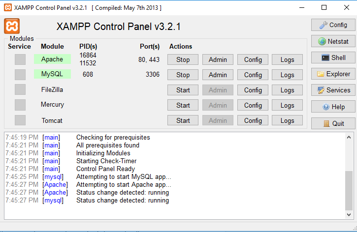B.Setelah Xampp running seperti gambar diatas, selanjutnya bukalah command promt untuk masuk ke mysql melalui command line dengan cara : menekan tombol windows + R bersamaan, lalu tulis cmd seperti gambar dibawah ini
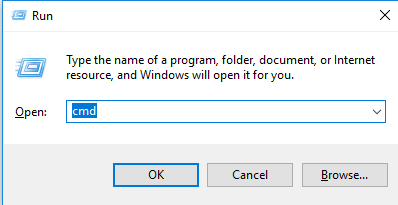 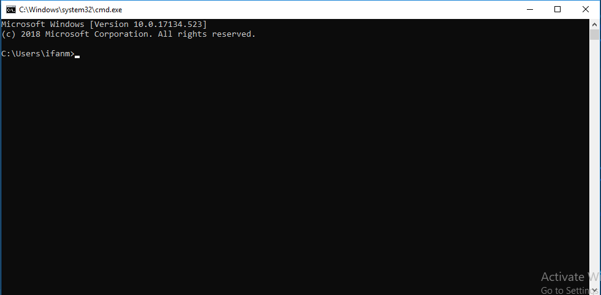C.selanjutnya, kita akan masuk kedalam folder direktori mysql untuk masuk ke database mysql. didalam command line, untuk mengesekusi query sql kita harus masuk kedalam database mysql itu dengan membuka koneksi di folder direktori mysql itu sendiri. seperti gambar dibawah ini:
Masukkan perintah dibawah ini untuk masuk kedalam direktori mysql
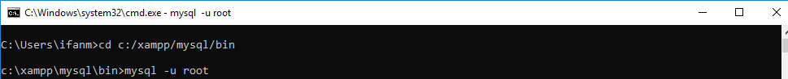jika sudah maka tampilan nya sekarang adalah seperti ini:
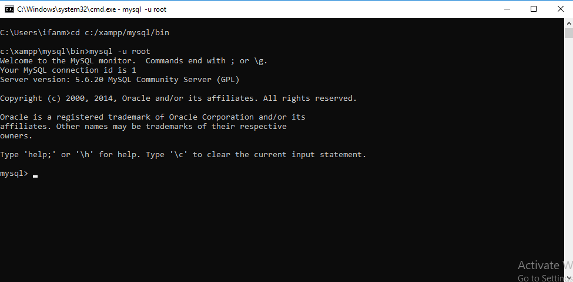Selamat Kamu berhasil membuka koneksi ke mysql, disini kita bisa melakukan banyak query mysql, namun dalam blog DDL kali ini kita akan belajar hal hal dibawah ini saja:
- Create
- Alter
- Drop
Perintah Create di DDL digunakan untuk membuat sebuah database atau table baru yang masih kosong.
adapun database yang akan kita buat kali ini ialah table nilai
mahasiswa
ikutin perintah dibawah ini :
jika sama seperti gambar diatas, maka kamu berhasil melakukan perintah DDL create database, untuk
melihat hasilnya kita bisa melihat dengan melakukan perintah
Show databases;
Note: Jangan Lupa tanda titik koma (;)
setiap melakukan perintah mysql di command line
Alter
Alter ialah perintah DDL mysql untuk mengubah definisi dari sebuah table, misalnya nama kolom, atribut kolom, dan menambah maupun menghapus kolom itu sendiri.
Create Table, Berikut Perintah Create Table Mahasiswa
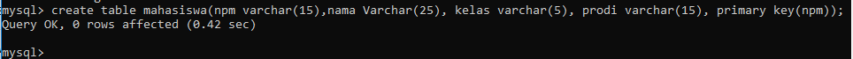Show table, Setelah Berhasil Create Table Mahasiswa, liatlah hasil nya dengan perintah: show tables;
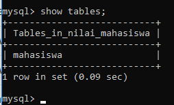Show Desc Table, juga bisa melihat field dan atribut dari table tersebut dengan mengikuti perintah dibawah ini:
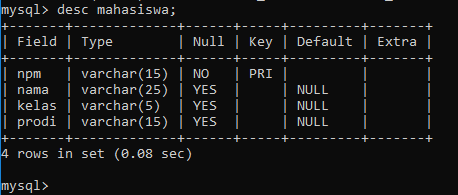Rename Table, Kita bisa merubah nama table mahasiswa, menjadi tbl_mahasiswa seperti gambar dibawah ini:
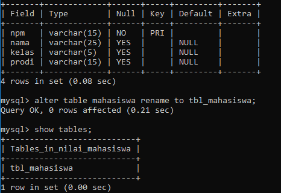Add New Column, Untuk menambah column dapat dilakukan dengan perintah dibawah ini:
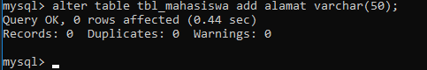Show added Column, liatlah hasilnya dengan menggunakan perintah: show desc;
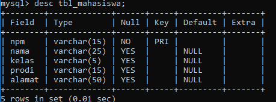Mengubah kolom tabel: Alter Modify, dengan menggunakan perintah alter kita bisa menambah, mengubah kolom didalam tabel, ikutin perintah dibawah ini:
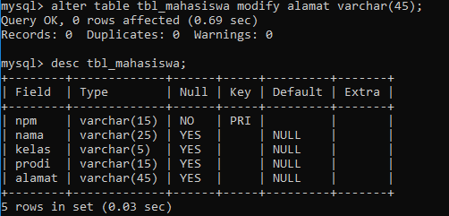Menghapus Kolom tabel: Alter Drop, lalu kita bisa menghapus kolom tabel dengan menggunakan perintah dibawah ini:
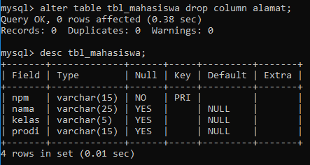Drop Table, untuk menghapus Tabel, sama seperti database kita menggunakan perintah Drop
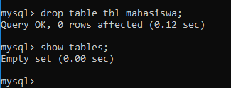Delete
Perintah Delete dilakukan untuk menghapus sebuah database, mari kita hapus kembali database
nilai_mahasiswa yang kita buat tadi,
Berikut Perintah nya:
jika sudah, lihat lah hasilnya dengan menggunakan perintah Show Database seperti tadi.
KesimpulanSelamat, kamu berhasil melakukan perintah DDL mysql. dengan menggunakan perintah perintah diatas kita dapat melakukan perubahan di dalam database mysql.